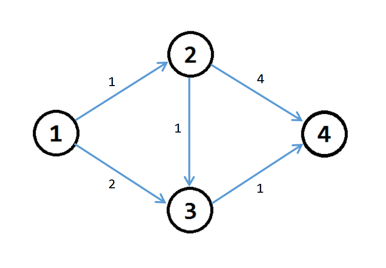
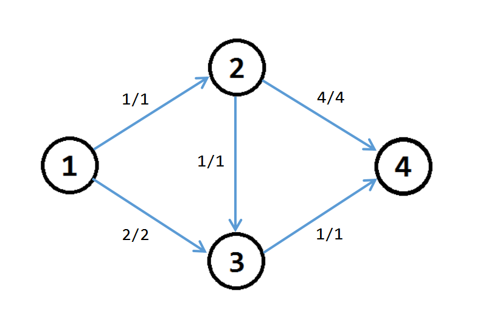
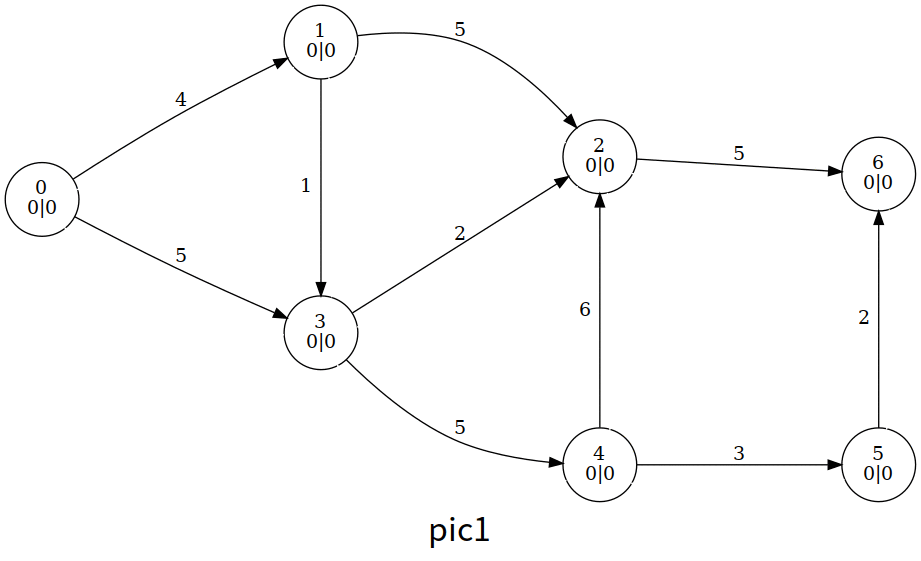
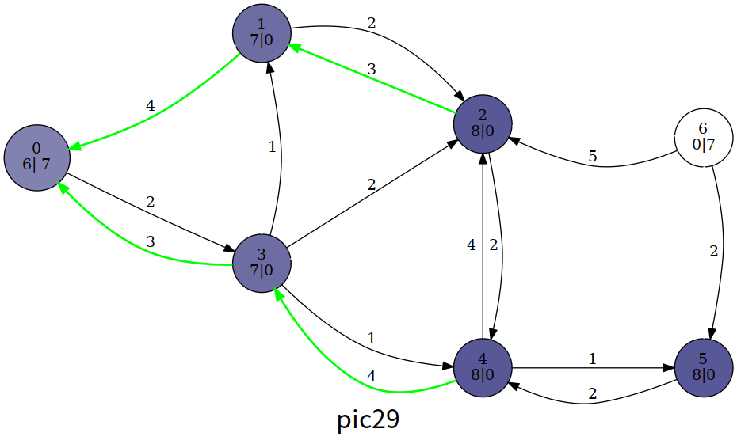

网络流基本概念参见 网络流简介
概述
我们有一张图，要求从源点流向汇点的最大流量（可以有很多条路到达汇点），就是我们的最大流问题。
Ford-Fulkerson 增广路算法
该方法通过寻找增广路来更新最大流，有 EK,dinic,SAP,ISAP 主流算法。
求解最大流之前，我们先认识一些概念。
残量网络
首先我们介绍一下一条边的剩余容量 $c_f(u,v)$ （Residual Capacity），它表示的是这条边的容量与流量之差，即 $c_f(u,v)=c(u,v)-f(u,v)$ 。
对于流函数 $f$ ，残存网络 $G_f$ （Residual Network）是网络 $G$ 中所有结点 和剩余容量大于 0 的边构成的子图。形式化的定义，即 $G_f=(V_f=V,E_f=\left{(u,v)\in E,c_f(u,v)>0\right})$ 。
注意，剩余容量大于 0 的边可能不在原图 $G$ 中（根据容量、剩余容量的定义以及流函数的斜对称性得到）。可以理解为，残量网络中包括了那些还剩了流量空间的边构成的图，也包括虚边（即反向边）。
増广路
在原图 $G$ 中若一条从源点到汇点的路径上所有边的 剩余容量都大于 0 ，这条路被称为增广路（Augmenting Path）。
或者说，在残存网络 $G_f$ 中，一条从源点到汇点的路径被称为增广路。如图：

我们从 $4$ 到 $3$ ，肯定可以先从流量为 $20$ 的这条边先走。那么这条边就被走掉了，不能再选，总的流量为 $20$ （现在）。然后我们可以这样选择：
$4\rightarrow2\rightarrow3$ 这条 增广路 的总流量为 $20$ 。到 $2$ 的时候还是 $30$ ，到 $3$ 了就只有 $20$ 了。
$4\rightarrow2\rightarrow1\rightarrow3$ 这样子我们就很好的保留了 $30$ 的流量。
所以我们这张图的最大流就应该是 $20+30=50$ 。
求最大流是很简单的，接下来讲解求最大流的 3 种方法。
Edmond-Karp 动能算法（EK 算法）
这个算法很简单，就是 BFS 找增广路 ，然后对其进行 增广 。你可能会问，怎么找？怎么增广？
找？我们就从源点一直 BFS 走来走去，碰到汇点就停，然后增广（每一条路都要增广）。我们在 BFS 的时候就注意一下流量合不合法就可以了。
增广？其实就是按照我们找的增广路在重新走一遍。走的时候把这条路的能够成的最大流量减一减，然后给答案加上最小流量就可以了。
再讲一下 反向边 。增广的时候要注意建造反向边，原因是这条路不一定是最优的，这样子程序可以进行反悔。假如我们对这条路进行增广了，那么其中的每一条边的反向边的流量就是它的流量。

讲一下一些小细节。如果你是用邻接矩阵的话，反向边直接就是从 $table[x,y]$ 变成 $table[y,x]$ 。如果是常用的链式前向星，那么在加入边的时候就要先加入反向边。那么在用的时候呢，我们直接 $i\operatorname{xor}1$ 就可以了 ( $i$ 为边的编号）。为什么呢？相信大家都是知道 $\operatorname{xor}$ 的，那么我们在加入正向边后加入反向边，就是靠近的，所以可以使用 $\operatorname{xor}$ 。我们还要注意一开始的编号要设置为 $tot=1$ ，因为边要从编号 $2$ 开始，这样子 $\operatorname{xor}$ 对编号 $2,3$ 的边才有效果。
EK 算法的时间复杂度为 $O(nm^2)$ （其中 $n$ 为点数， $m$ 为边数）。效率还有很大提升空间。
#define maxn 250
#define INF 0x3f3f3f3f
struct Edge {
int from, to, cap, flow;
Edge(int u, int v, int c, int f) : from(u), to(v), cap(c), flow(f) {}
};
struct EK {
int n, m;
vector<Edge> edges;
vector<int> G[maxn];
int a[maxn], p[maxn];
void init(int n) {
for (int i = 0; i < n; i++) G[i].clear();
edges.clear();
}
void AddEdge(int from, int to, int cap) {
edges.push_back(Edge(from, to, cap, 0));
edges.push_back(Edge(to, from, 0, 0));
m = edges.size();
G[from].push_back(m - 2);
G[to].push_back(m - 1);
}
int Maxflow(int s, int t) {
int flow = 0;
for (;;) {
memset(a, 0, sizeof(a));
queue<int> Q;
Q.push(s);
a[s] = INF;
while (!Q.empty()) {
int x = Q.front();
Q.pop();
for (int i = 0; i < G[x].size(); i++) {
Edge& e = edges[G[x][i]];
if (!a[e.to] && e.cap > e.flow) {
p[e.to] = G[x][i];
a[e.to] = min(a[x], e.cap - e.flow);
Q.push(e.to);
}
}
if (a[t]) break;
}
if (!a[t]) break;
for (int u = t; u != s; u = edges[p[u]].from) {
edges[p[u]].flow += a[t];
edges[p[u] ^ 1].flow -= a[t];
}
flow += a[t];
}
return flow;
}
};
Dinic 算法
Dinic 算法 的过程是这样的：每次增广前，我们先用 BFS 来将图分层。设源点的层数为 $0$ ，那么一个点的层数便是它离源点的最近距离。
通过分层，我们可以干两件事情：
- 如果不存在到汇点的增广路（即汇点的层数不存在），我们即可停止增广。
- 确保我们找到的增广路是最短的。（原因见下文）
接下来是 DFS 找增广路的过程。
我们每次找增广路的时候，都只找比当前点层数多 $1$ 的点进行增广（这样就可以确保我们找到的增广路是最短的）。
Dinic 算法有两个优化：
- 多路增广 ：每次找到一条增广路的时候，如果残余流量没有用完怎么办呢？我们可以利用残余部分流量，再找出一条增广路。这样就可以在一次 DFS 中找出多条增广路，大大提高了算法的效率。
- 当前弧优化 ：如果一条边已经被增广过，那么它就没有可能被增广第二次。那么，我们下一次进行增广的时候，就可以不必再走那些已经被增广过的边。
设点数为 $n$ ，边数为 $m$ ，那么 Dinic 算法的时间复杂度是 $O(n^{2}m)$ ，在稀疏图上效率和 EK 算法相当，但在稠密图上效率要比 EK 算法高很多。
特别地，在求解二分图最大匹配问题时，可以证明 Dinic 算法的时间复杂度是 $O(m\sqrt{n})$ 。
#define maxn 250
#define INF 0x3f3f3f3f
struct Edge {
int from, to, cap, flow;
Edge(int u, int v, int c, int f) : from(u), to(v), cap(c), flow(f) {}
};
struct Dinic {
int n, m, s, t;
vector<Edge> edges;
vector<int> G[maxn];
int d[maxn], cur[maxn];
bool vis[maxn];
void init(int n) {
for (int i = 0; i < n; i++) G[i].clear();
edges.clear();
}
void AddEdge(int from, int to, int cap) {
edges.push_back(Edge(from, to, cap, 0));
edges.push_back(Edge(to, from, 0, 0));
m = edges.size();
G[from].push_back(m - 2);
G[to].push_back(m - 1);
}
bool BFS() {
memset(vis, 0, sizeof(vis));
queue<int> Q;
Q.push(s);
d[s] = 0;
vis[s] = 1;
while (!Q.empty()) {
int x = Q.front();
Q.pop();
for (int i = 0; i < G[x].size(); i++) {
Edge& e = edges[G[x][i]];
if (!vis[e.to] && e.cap > e.flow) {
vis[e.to] = 1;
d[e.to] = d[x] + 1;
Q.push(e.to);
}
}
}
return vis[t];
}
int DFS(int x, int a) {
if (x == t || a == 0) return a;
int flow = 0, f;
for (int& i = cur[x]; i < G[x].size(); i++) {
Edge& e = edges[G[x][i]];
if (d[x] + 1 == d[e.to] && (f = DFS(e.to, min(a, e.cap - e.flow))) > 0) {
e.flow += f;
edges[G[x][i] ^ 1].flow -= f;
flow += f;
a -= f;
if (a == 0) break;
}
}
return flow;
}
int Maxflow(int s, int t) {
this->s = s;
this->t = t;
int flow = 0;
while (BFS()) {
memset(cur, 0, sizeof(cur));
flow += DFS(s, INF);
}
return flow;
}
};
ISAP
这个是 SAP 算法的加强版 (Improved)。
struct Edge {
int from, to, cap, flow;
Edge(int u, int v, int c, int f) : from(u), to(v), cap(c), flow(f) {}
};
bool operator<(const Edge& a, const Edge& b) {
return a.from < b.from || (a.from == b.from && a.to < b.to);
}
struct ISAP {
int n, m, s, t;
vector<Edge> edges;
vector<int> G[maxn];
bool vis[maxn];
int d[maxn];
int cur[maxn];
int p[maxn];
int num[maxn];
void AddEdge(int from, int to, int cap) {
edges.push_back(Edge(from, to, cap, 0));
edges.push_back(Edge(to, from, 0, 0));
m = edges.size();
G[from].push_back(m - 2);
G[to].push_back(m - 1);
}
bool BFS() {
memset(vis, 0, sizeof(vis));
queue<int> Q;
Q.push(t);
vis[t] = 1;
d[t] = 0;
while (!Q.empty()) {
int x = Q.front();
Q.pop();
for (int i = 0; i < G[x].size(); i++) {
Edge& e = edges[G[x][i] ^ 1];
if (!vis[e.from] && e.cap > e.flow) {
vis[e.from] = 1;
d[e.from] = d[x] + 1;
Q.push(e.from);
}
}
}
return vis[s];
}
void init(int n) {
this->n = n;
for (int i = 0; i < n; i++) G[i].clear();
edges.clear();
}
int Augment() {
int x = t, a = INF;
while (x != s) {
Edge& e = edges[p[x]];
a = min(a, e.cap - e.flow);
x = edges[p[x]].from;
}
x = t;
while (x != s) {
edges[p[x]].flow += a;
edges[p[x] ^ 1].flow -= a;
x = edges[p[x]].from;
}
return a;
}
int Maxflow(int s, int t) {
this->s = s;
this->t = t;
int flow = 0;
BFS();
memset(num, 0, sizeof(num));
for (int i = 0; i < n; i++) num[d[i]]++;
int x = s;
memset(cur, 0, sizeof(cur));
while (d[s] < n) {
if (x == t) {
flow += Augment();
x = s;
}
int ok = 0;
for (int i = cur[x]; i < G[x].size(); i++) {
Edge& e = edges[G[x][i]];
if (e.cap > e.flow && d[x] == d[e.to] + 1) {
ok = 1;
p[e.to] = G[x][i];
cur[x] = i;
x = e.to;
break;
}
}
if (!ok) {
int m = n - 1;
for (int i = 0; i < G[x].size(); i++) {
Edge& e = edges[G[x][i]];
if (e.cap > e.flow) m = min(m, d[e.to]);
}
if (--num[d[x]] == 0) break;
num[d[x] = m + 1]++;
cur[x] = 0;
if (x != s) x = edges[p[x]].from;
}
}
return flow;
}
};
Push-Relabel 预流推进算法
该方法在求解过程中忽略流守恒性，并每次对一个结点更新信息，以求解最大流。
通用的预流推进算法
首先我们介绍预流推进算法的主要思想，以及一个可行的暴力实现算法。
预流推进算法通过对单个结点的更新操作，直到没有结点需要更新来求解最大流。
算法过程维护的流函数不一定保持流守恒性，对于一个结点，我们允许进入结点的流超过流出结点的流，超过的部分被称为结点 $u(u\in V-{s,t})$ 的 超额流 $e(u)$ ：
$$ e(u)=\sum{(x,u)\in E}f(x,u)-\sum{(u,y)\in E}f(u,y)
$$
若 $e(u)>0$ ，称结点 $u$ 溢出 。
预流推进算法维护每个结点的高度 $h(u)$ ，并且规定溢出的结点 $u$ 如果要推送超额流，只能向高度小于 $u$ 的结点推送；如果 $u$ 没有相邻的高度小于 $u$ 的结点，就修改 $u$ 的高度（重贴标签）。
高度函数
准确地说，预流推进维护以下的一个映射 $h:V\to \mathbf{N}$ ：
- $h(s)=|V|,h(t)=0$
- $\forall (u,v)\in E_f,h(u)\leq h(v)+1$
称 $h$ 是残存网络 $G_f=(V_f,E_f)$ 的高度函数。
引理 1：设 $G_f$ 上的高度函数为 $h$ ，对于任意两个结点 $u,v\in V$ ，如果 $h(u)>h(v)+1$ ，则 $(u,v)$ 不是 $G_f$ 中的边。
算法只会在 $h(u)=h(v)+1$ 的边执行推送。
推送（Push）
适用条件：结点 $u$ 溢出，且存在结点 $v((u,v)\in E_f,c(u,v)-f(u,v)>0,h(u)=h(v)+1)$ ，则 push 操作适用于 $(u,v)$ 。
于是，我们尽可能将超额流从 $u$ 推送到 $v$ ，推送过程中我们只关心超额流和 $c(u,v)-f(u,v)$ 的最小值，不关心 $v$ 是否溢出。
如果 $(u,v)$ 在推送完之后满流，将其从残存网络中删除。
重贴标签（Relabel）
适用条件：如果结点 $u$ 溢出，且 $\forall (u,v)\in E_f,h(u)\leq h(v)$ ，则 relabel 操作适用于 $u$ 。
则将 $h(u)$ 更新为 $min_{(u,v)\in E_f}h(v)+1$ 即可。
初始化
$$ \begin{split} &\forall (u,v)\in E,&f(u,v)=\left{\begin{split} &c(u,v)&,u=s\ &0&,u\neq s\ \end{split}\right. \ &\forall u\in V,&h(u)=\left{\begin{split} &|V|&,u=s\ &0&,u\neq s\ \end{split}\right. ,e(u)=\sum{(x,u)\in E}f(x,u)-\sum{(u,y)\in E}f(u,y) \end{split}
$$
上述将 $(s,v)\in E$ 充满流，并将 $h(s)$ 抬高，使得 $(s,v)\notin Ef$ ，因为 $h(s)>h(v)$ ，而且 $(s,v)$ 毕竟满流，没必要留在残存网络中；上述还将 $e(s)$ 初始化为 $\sum{(s,v)\in E}f(s,v)$ 的相反数。
通用算法
我们每次扫描整个图，只要存在结点 $u$ 满足 push 或 relabel 操作的条件，就执行对应的操作。
如图，每个结点中间表示编号，左下表示高度值 $h(u)$ ，右下表示超额流 $e(u)$ ，结点颜色的深度也表示结点的高度；边权表示 $c(u,v)-f(u,v)$ ，绿色的边表示满足 $h(u)=h(v)+1$ 的边 $(u,v)$ （即残存网络的边 $E_f$ ）：

整个算法我们大致浏览一下过程，这里笔者使用的是一个暴力算法，即暴力扫描是否有溢出的结点，有就更新

最后的结果

可以发现，最后的超额流一部分回到了 $s$ ，且除了源点汇点，其他结点都没有溢出；这时的流函数 $f$ 满足流守恒性，为最大流，即 $e(t)$ 。
???+ "核心代码"
```cpp
const int N = 1e4 + 4, M = 1e5 + 5, INF = 0x3f3f3f3f;
int n, m, s, t, maxflow, tot;
int ht[N], ex[N];
void init() { // 初始化
for (int i = h[s]; i; i = e[i].nex) {
const int &v = e[i].t;
ex[v] = e[i].v, ex[s] -= ex[v], e[i ^ 1].v = e[i].v, e[i].v = 0;
}
ht[s] = n;
}
bool push(int ed) {
const int &u = e[ed ^ 1].t, &v = e[ed].t;
int flow = min(ex[u], e[ed].v);
ex[u] -= flow, ex[v] += flow, e[ed].v -= flow, e[ed ^ 1].v += flow;
return ex[u]; // 如果 u 仍溢出，返回 1
}
void relabel(int u) {
ht[u] = INF;
for (int i = h[u]; i; i = e[i].nex)
if (e[i].v) ht[u] = min(ht[u], ht[e[i].t]);
++ht[u];
}
```
HLPP 算法
最高标号预流推进算法（High Level Preflow Push）是基于预流推进算法的优先队列实现，该算法优先推送高度高的溢出的结点，算法算法复杂度 $O(n^2\sqrt m)$ 。
具体地说，HLPP 算法过程如下：
- 初始化（基于预流推进算法）；
- 选择溢出结点（除 $s,t$ ）中高度最高的结点 $u$ ，并对它所有可以推送的边进行推送；
- 如果 $u$ 仍溢出，对它重贴标签，回到步骤 2；
- 如果没有溢出的结点，算法结束。
BFS 优化
HLPP 的上界为 $O(n^2\sqrt m)$ ，但在使用时卡得比较紧；我们可以在初始化高度的时候进行优化。具体来说，我们初始化 $h(u)$ 为 $u$ 到 $t$ 的最短距离；特别地， $h(s)=n$ 。
在 BFS 的同时我们顺便检查图的连通性，排除无解的情况。
GAP 优化
HLPP 推送的条件是 $h(u)=h(v)+1$ ，而如果在算法的某一时刻， $h(u)=t$ 的结点个数为 $0$ ，那么对于 $h(u)>t$ 的结点就永远无法推送超额流到 $t$ ，因此只能送回 $s$ ，那么我们就在这时直接让他们的高度变成 $n+1$ ，以尽快推送回 $s$ ，减少重贴标签的操作。
??? "LuoguP4722【模板】最大流 加强版/预流推进"
```cpp
#include <cstdio>
#include <cstring>
#include <queue>
using namespace std;
const int N = 1e4 + 4, M = 2e5 + 5, INF = 0x3f3f3f3f;
int n, m, s, t;
struct qxx {
int nex, t, v;
};
qxx e[M * 2];
int h[N], cnt = 1;
void add_path(int f, int t, int v) { e[++cnt] = (qxx){h[f], t, v}, h[f] = cnt; }
void add_flow(int f, int t, int v) {
add_path(f, t, v);
add_path(t, f, 0);
}
int ht[N], ex[N], gap[N]; // 高度；超额流；gap 优化
bool bfs_init() {
memset(ht, 0x3f, sizeof(ht));
queue<int> q;
q.push(t), ht[t] = 0;
while (q.size()) { // 反向 BFS, 遇到没有访问过的结点就入队
int u = q.front();
q.pop();
for (int i = h[u]; i; i = e[i].nex) {
const int &v = e[i].t;
if (e[i ^ 1].v && ht[v] > ht[u] + 1) ht[v] = ht[u] + 1, q.push(v);
}
}
return ht[s] != INF; // 如果图不连通，返回 0
}
struct cmp {
bool operator()(int a, int b) const { return ht[a] < ht[b]; }
}; // 伪装排序函数
priority_queue<int, vector<int>, cmp> pq; // 将需要推送的结点以高度高的优先
bool vis[N]; // 是否在优先队列中
int push(int u) { // 尽可能通过能够推送的边推送超额流
for (int i = h[u]; i; i = e[i].nex) {
const int &v = e[i].t, &w = e[i].v;
if (!w || ht[u] != ht[v] + 1) continue;
int k = min(w, ex[u]); // 取到剩余容量和超额流的最小值
ex[u] -= k, ex[v] += k, e[i].v -= k, e[i ^ 1].v += k; // push
if (v != s && v != t && !vis[v])
pq.push(v), vis[v] = 1; // 推送之后，v 必然溢出，则入堆，等待被推送
if (!ex[u]) return 0; // 如果已经推送完就返回
}
return 1;
}
void relabel(int u) { // 重贴标签（高度）
ht[u] = INF;
for (int i = h[u]; i; i = e[i].nex)
if (e[i].v) ht[u] = min(ht[u], ht[e[i].t]);
++ht[u];
}
int hlpp() { // 返回最大流
if (!bfs_init()) return 0; // 图不连通
ht[s] = n;
memset(gap, 0, sizeof(gap));
for (int i = 1; i <= n; i++)
if (ht[i] != INF) gap[ht[i]]++; // 初始化 gap
for (int i = h[s]; i; i = e[i].nex) {
const int v = e[i].t, w = e[i].v; // 队列初始化
if (!w) continue;
ex[s] -= w, ex[v] += w, e[i].v -= w, e[i ^ 1].v += w; // 注意取消 w 的引用
if (v != s && v != t && !vis[v]) pq.push(v), vis[v] = 1; // 入队
}
while (pq.size()) {
int u = pq.top();
pq.pop(), vis[u] = 0;
while (push(u)) { // 仍然溢出
// 如果 u 结点原来所在的高度没有结点了，相当于出现断层
if (!--gap[ht[u]])
for (int i = 1; i <= n; i++)
if (i != s && i != t && ht[i] > ht[u] && ht[i] < n + 1) ht[i] = n + 1;
relabel(u);
++gap[ht[u]]; // 新的高度，更新 gap
}
}
return ex[t];
}
int main() {
scanf("%d%d%d%d", &n, &m, &s, &t);
for (int i = 1, u, v, w; i <= m; i++) {
scanf("%d%d%d", &u, &v, &w);
add_flow(u, v, w);
}
printf("%d", hlpp());
return 0;
}
```
感受一下运行过程

其中 pic13 到 pic14 执行了 Relabel(4)，并进行了 GAP 优化。